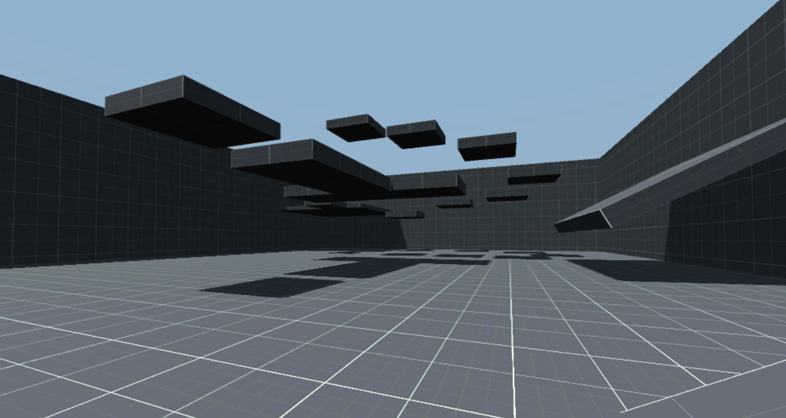

Explore the world with Abby.
Immerse Obby Game designed to run on very old laptops, it use OpenGL 2.0 with incredible performence without losing modern quality !

Fast Paced
Experience smooth gameplay with optimized mechanics for high-end performance.
Stunning Art
Beautifully handcrafted environments designs.
Game
Join a Classic Obby game created with Godot.
Download Center
Select your preferred version of Abby for Windows (.zip file)
Abby Demo (1.0.0.3) 64-bit Latest
Windows 7/8/8.1/10/11 • ZIP 16 MB • GAME 41 MB • 64-bit • Released April 2026
Abby Demo (1.0.0.3) 32-bit
Windows 7/8/8.1/10/11 • ZIP 16 MB • GAME 42 MB • 32-bit • Released April 2026
Abby Demo (1.0.0.2) 64-bit
Windows 7/8/8.1/10/11 • ZIP 16 MB • GAME 40 MB • 64-bit • Released April 2026
Abby Demo (1.0.0.2) 32-bit
Windows 7/8/8.1/10/11 • ZIP 16 MB • GAME 45 MB • 32-bit • Released April 2026
Abby Demo (1.0.0.1) 64-bit
Windows 7/8/8.1/10/11 • ZIP 16 MB • GAME 40 MB • 64-bit • Released April 2026
Abby Demo (1.0.0.1) 32-bit
Windows 7/8/8.1/10/11 • ZIP 16 MB • GAME 50 MB • 32-bit • Released April 2026
Abby Demo (1.0.0.0)
Windows 7/8/8.1/10/11 • ZIP 16 MB • GAME 50 MB • 32-bit • Released April 2026
Need help? Join our Discord community for installation support.
Try it Online
Experience a demo right in your browser.
Use WSQD to Move | Space to Jump